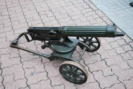
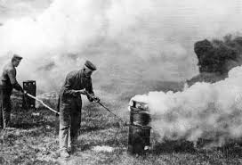
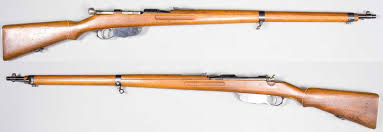

Híres Fegyverek

Maxim Géppuska
Az első modern géppuska, amely teljesen megváltoztatta a hadviselést.

Brit Mark I Tank
Az első harckocsik 1916-ban jelentek meg.

Vegyi Fegyverek
A mustárgáz az első világháború egyik legrettegettebb fegyvere volt.

Mannlicher Puska
Az Osztrák–Magyar Monarchia katonáinak egyik legfontosabb fegyvere.